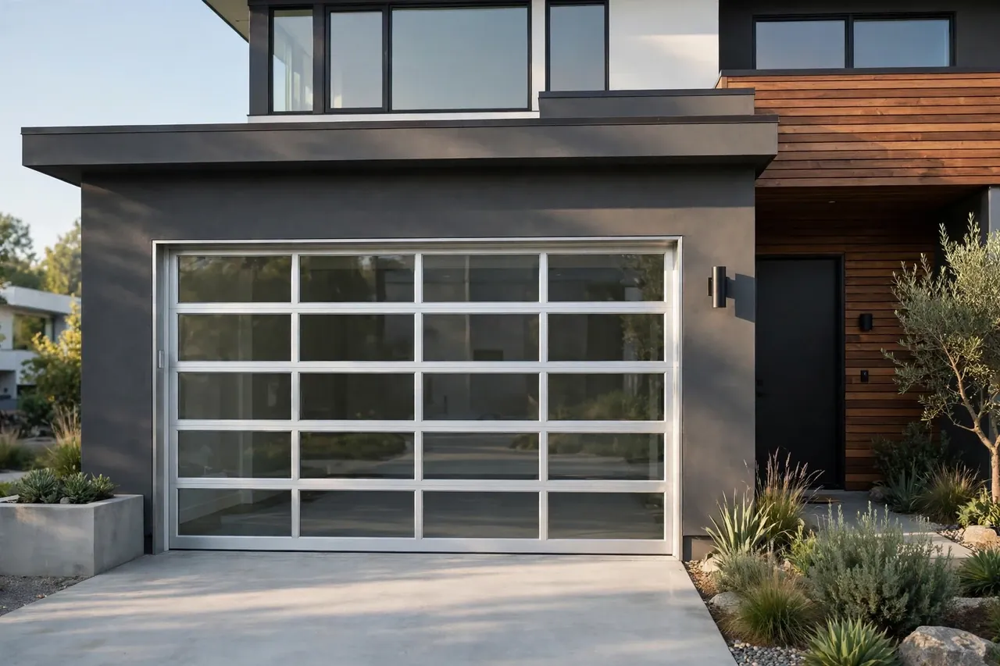

Repair or replace your garage door opener: how to decide
Repair or replace? The answer depends on the opener's age, the fault, its safety features, and what the work involves. Here is how to weigh the choice without guesswork.

A garage door opener that hesitates, hums, reverses for no clear reason, or stops responding leaves you with one question: repair it or replace it. There is no single right answer. Age, the nature of the fault, the safety features fitted, and the cost of the work all pull in different directions.
This guide lays out the decision the way the evidence supports it: how long openers last, the signs that point toward replacement, the national guide ranges for repair and replacement work, and the mistakes that push the decision the wrong way. Every dollar figure below is a labeled national guide range, not a quote and not this business's price.
Repair or replace? The short answer
Repair tends to be the better call when the opener is within its expected life, the fault is a single part such as a sensor, a remote, or a drive component, and the safety features work. Replacement tends to be the better call when the opener is past its expected life, faults keep returning, parts are hard to find, or the unit predates modern safety features.
One rule of thumb comes from a national guide: This Old House (opener cost guide, updated June 5, 2026) states that replacement is worth considering when a repair exceeds half the cost of a new unit. That is a guide's rule of thumb, not a pricing promise, and it still needs the age and safety checks below before it means anything for a particular opener.
Start with the opener itself, not the price. A newer opener with a single fault and working safety features is usually a repair. An opener manufactured before 1993 may lack modern entrapment protection (photoelectric sensors or an equivalent secondary device were required on units manufactured from 1 January 1993), and a national guide treats replacement on safety grounds alone as justified for those units. If you do not know the opener's age, the rating label on the motor unit usually carries a manufacture date.
How long do garage door openers last?
This Old House (opener cost guide, updated June 5, 2026) gives an opener lifespan of 10 to 15 years. That is a national guide figure for the unit itself, not a promise about any one opener: use, door weight, maintenance, and the condition of the springs all affect how long a unit lasts in practice.
Springs matter more than most owners expect. Weak or broken springs force the opener to carry the door's weight, which strains the drive and can shorten the opener's life. A humming opener that does not move the door may be reporting a spring problem rather than an opener problem, which is why garage door spring replacement in Zion, IL is often part of the diagnosis.
Zion's housing stock adds context: with a median year built of 1971 and 88.9% of homes built before 2000 (American Community Survey 2020-2024 5-year estimates, via the CMAP Community Data Snapshot), many garages may hold older openers, though the age of any one opener depends on its replacement history. If your opener predates 1993, ask a technician about its safety features before spending on a repair.
Signs you need a new garage door opener in Zion, IL
- The opener predates 1993. Units from before 1993 may lack modern entrapment protection. Federal rules (16 CFR Part 1211, UL 325) require residential automatic garage door operators to have entrapment protection: an inherent reversal system plus a secondary entrapment protection device (such as photoelectric sensors or an edge sensor) or a constant-contact control. Test sensors and auto-reverse regularly.
- Faults keep returning. A second or third repair for related faults in a short period usually means the unit is wearing out as a whole rather than failing in one part.
- The motor runs but the door does not move, or movement is jerky and inconsistent. Drive wear, gear damage, or a failing motor can all show this way, especially alongside a heavy or unbalanced door.
- The opener is loud in a new way. New grinding, rattling, or straining sounds from the motor unit point to internal wear. Compare with the door's normal sound rather than judging loudness alone.
- Remotes and keypads stop working reliably and the usual checks do not help. Battery, programming, and range checks are covered in why is my garage door remote not working. If those checks pass and the problem persists, the receiver or logic board may be failing.
- Safety features fail testing. An opener that will not reverse on contact or whose sensors cannot be made to work is a safety problem first and a repair question second. Stop using the automatic opener until it is checked.
No Illinois battery-backup mandate for garage door openers was found. Battery backup is a feature some openers offer for use during a power outage; it is not stated here as a legal requirement.
What national guides say about opener repair and replacement costs
Every figure in this section is a national guide range, not a quote and not this business's price, with its source, date, and scope stated. No Zion opener price was found in any source read, and none is stated here.
Opener repair. HomeGuide (spring replacement guide, updated October 27, 2025) gives opener repair as $75-$300 (national guide range, not a quote and not this business's price; scope: opener repair, repair-table figure). Angi (replacement cost guide, updated September 21, 2026) gives repairing a garage door opener as $100-$500 (national guide range, not a quote and not this business's price; scope: opener repair in a replacement-budgeting context). The two guides overlap; neither is this business's price.
Opener replacement, installed. This Old House (opener cost guide, updated June 5, 2026) gives a new opener at $213-$371, with replacement at about $371 including installation (national guide range, not a quote and not this business's price; scope: total expense including opener, labor, and accessories). HomeGuide (insulated door guide, updated October 15, 2025) gives a new opener at $300-$900 (national guide range, not a quote and not this business's price; scope: including installation labor and the opener). This Old House (spring guide, updated March 10, 2026) gives opener replacement at $430-$730 and automatic opener installation at $500-$860 (national guide range, not a quote and not this business's price; scope: via Homewyse, in a repair table). Housecall Pro (price guide, March 11, 2026) gives opener replacement at $300-$800 (national guide range, not a quote and not this business's price; scope: replacement job, with motor type and smart features driving cost). The honest national picture from guides read is a spread of $213-$900 installed, depending on drive type, features, and guide (national guide range, not a quote and not this business's price; scope: composite low-to-high across the opener guides cited in this section).
Installation labor and add-ons. This Old House (opener cost guide, updated June 5, 2026) gives professional installation labor at $132-$183 (national guide range, not a quote and not this business's price; scope: 2-6 hours including removal and disposal of the old unit, assembly and mounting, sensors, power, programming, balance testing, and a tutorial). The same guide gives electrical work for a new outlet or circuit at $150-$400 (national guide range, not a quote and not this business's price; scope: electrical work) and structural modifications at $150-$800 (national guide range, not a quote and not this business's price; scope: low ceilings, ductwork, or joist reinforcement). Whether a City of Zion permit is required for garage-door work, and any fee, was not confirmed on a City source; contact the City of Zion Building Department, 2828 Sheridan Road, (847) 746-4018, before work begins.
Smart features. This Old House (opener cost guide, updated June 5, 2026) gives an opener with Wi-Fi and smartphone control at $100-$450 (national guide range, not a quote and not this business's price; scope: smart opener unit as stated in the guide body) and an add-on smart control for a non-Wi-Fi opener at $90-$150 (national guide range, not a quote and not this business's price; scope: add-on control). Smart features sit at the higher end of the automatic-opener range in the guides read.
Drive-type and horsepower price tables in the guides were left out here because the report records their scope as ambiguous between unit-only and installed prices. Any figure whose scope was unclear was dropped rather than guessed.
When repair is the smarter call
Repair is usually the smarter call when the opener is well within its 10-to-15-year expected life, the fault is isolated, the safety features pass their tests, and the door itself is balanced and in good shape. Sensor alignment, a worn drive component, a failed remote, and a capacitor or gear fault on a younger unit are the classic repair cases.
Repair also makes sense when the door and springs are sound. An opener fault caused by a dragging door or weak springs will return unless the door side is corrected, so a good repair visit checks the door, springs, and tracks as well as the opener. That is the maintenance side of the job, covered under garage door maintenance in Zion, IL.
Ask what was found and what the repair covers before agreeing to the work, and get the scope in writing. If the repair cost approaches the guide's half-of-new-unit rule of thumb, ask the technician to talk through the replacement option before deciding.
When replacement wins
Replacement wins when the opener is past its expected life, when faults return after repair, when parts are no longer available, when the unit predates modern safety features, or when the repair cost approaches half the cost of a new unit under the guide rule of thumb above. A door replacement is also a natural moment to reassess the opener: a new door with an old, straining opener keeps the weakest link in the system.
Replacement is also the moment to consider the features that matter for the garage in question: quieter drive types for attached garages with rooms above or beside them, smart control where remote monitoring helps, and battery backup where power outages are a concern. No brand is recommended here; the owner has supplied no brand information, and any opener choice should be discussed with the technician on the basis of the door's weight and use.
If a new door is part of the picture, see garage door installation in Zion, IL and garage door opener repair in Zion, IL, which covers opener repair, installation, and smart upgrades on one page.
Common mistakes homeowners make with openers
- Replacing the opener without checking the door. A new opener on an unbalanced door with weak springs will strain from the first day. Check springs, cables, rollers, and tracks first.
- Repairing a pre-1993 opener repeatedly. Older units may lack modern safety features. Repeated repairs on such a unit spend money without fixing the safety gap.
- Judging by noise alone. Some drive types are louder by design. Judge by change: new sounds, new hesitation, or new reversing behavior matter more than absolute loudness.
- Bypassing sensors to keep the door running. Sensors and auto-reverse are safety features required by federal rules. A door that only closes when the wall button is held down usually has a sensor fault that needs correcting, not bypassing.
- Forcing the door when the opener strains. If the opener hums and the door does not move, stop. Continued cycles can damage the drive and the door hardware.
When to call a professional
Call a professional when the opener hums without moving the door, the door opens a few inches and stops or reverses, the safety reverse or sensors fail a test, the opener makes new grinding or straining sounds, or the door feels extremely heavy when lifted by hand with the opener disconnected. Each of those points to a fault in the opener, the springs, or both.
Milwaukee Garage Doors Inc is open 24 hours, every day. Call (224) 842-7761. For area background, see garage doors in Central Zion, IL.
Frequently Asked Questions
Should I repair or replace my garage door opener in Zion IL?
Repair when the opener is within its 10-to-15-year expected life, the fault is isolated, and the safety features work. Replace when it is past its expected life, faults return, parts are unavailable, or it predates 1993 safety features. A national guide rule of thumb is to consider replacement when a repair exceeds half the cost of a new unit.
How long do garage door openers last in Zion Illinois?
A national guide (This Old House, updated June 5, 2026) gives an opener lifespan of 10 to 15 years. Use, door weight, maintenance, and spring condition all affect any one unit. An opener manufactured before 1993 may lack modern entrapment protection (photoelectric sensors or an equivalent secondary device were required on units manufactured from 1 January 1993).
What is cheaper, repairing or replacing a garage door opener?
It depends on the fault and the unit's age. National guide ranges for opener repair run $75-$300 (HomeGuide, updated October 27, 2025) to $100-$500 (Angi, updated September 21, 2026), and installed replacement runs $213-$900 across guides read; each figure is a national guide range, not a quote and not this business's price. A guide rule of thumb is to weigh replacement when repair exceeds half the cost of a new unit.
How do I know if my garage door opener needs replacing in Zion IL?
Signs include an age past 10 to 15 years, faults returning after repair, parts no longer available, new grinding or straining sounds, unreliable remotes after battery and programming checks, and any safety feature failing its test. An opener manufactured before 1993 may lack modern entrapment protection (photoelectric sensors or an equivalent secondary device were required on units manufactured from 1 January 1993).
Can I replace just the motor instead of the whole opener?
Whether a motor alone can be replaced depends on the opener's design and whether parts are available for that unit. A technician can advise after seeing the opener, its age, and the fault. If the unit is old or its safety features are out of date, full replacement is often the more sensible discussion.
Get help with Garage Doors in Zion
If your opener is hesitating, humming, reversing, or failing its safety tests, call Milwaukee Garage Doors Inc at (224) 842-7761. We are open 24 hours, every day.
Read about garage door opener repair in Zion, IL and garage doors in Central Zion, IL, or go to contact Milwaukee Garage Doors Inc.